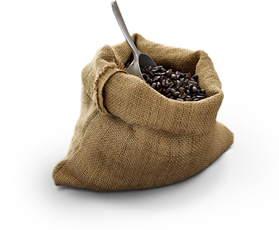

| “로스터로 10분간 로스팅하면 원두는 고르게 갈색이 되고 오일 때문에 겉표면이 벗겨지기 시작합니다." 커피 생두가 커다란 회전통에서 가열될 때 변형이 시작됩니다. 5~7분간 뜨거운 열을 받으면 원두는 노란 색상으로 변하고 팝콘 같은 냄새가 납니다. 이때 "첫 번째 펑 소리"가 납니다 - 원두는 두 배로 커지고 팽창하면서 갈라집니다. 이제 연한 갈색이 됩니다. 여기서 만일 커피 샘플 채취하기 위해 이 과정에서 멈춘다면 시큼한 1차원적인 풍미만이 남습니다. 좀더 복합적이고 훌륭한 풍미까지 전개되지는 못한 것입니다. 로스터로 10분간 로스팅하면 원두는 고르게 갈색이 되고 오일 때문에 겉표면이 벗겨지기 시작합니다. 11분에서 15분 사이 어느 한 지점에서(커피마다 다릅니다) 원두는 잠재된 풍미를 충분히 전개하기 시작합니다. "두 번째 펑 소리"는 때가 가까웠음을 암시합니다. 원두를 냉각 트레이에 풀어 놓으면 갓 로스팅된 커피 냄새가 가득 차면서 "두 번째 펑 소리"의 마지막 탁탁소리와 함께 박수소리가 들립니다. |
블랜딩 우리가 하는 일에서 가장 즐거운 일들 중 하나는 여러분에게 전 세계의 훌륭한 커피를 가져다 주는 것입니다. 일부는 우리가 각 원산지 특유의 독특한 풍미를 선보이는 단일원산지 커피로 제공하고 있습니다. - 이 부분에 대해서는 곧 설명하겠습니다. 여기서는 나머지 커피들을 이야기 할 것이고, 놀라운 블렌드를 만들기 위해 쓰입니다. “ 하우스 블렌드는 세 가지 뛰어난 라틴 아메리카 커피들을 결합하여 그 지역 최고의 품질을 상징적으로 드러낼 수 있는 하나의 커피로 만듭니다.” 여기서는 나머지 커피들을 이야기할 것이고 놀라운 블렌드를 만들기 위해 쓰입니다. 옥탑방에서 우리는 특정 원산지를 소개하기 위해 커피를 블렌딩할 수 있습니다. 예를 들어 하우스 블렌드는 세 가지 뛰어난 라틴 아메리카 커피들을 결합하여 그 지역 최고의 품질을 상징적으로 드러낼 수 있는 하나의 커피로 만듭니다. 생기 있고 깔끔하며 균형을 잘 이룬 풍미. 가제보 블렌드®는 아프리카 커피들을 강조합니다. “선명한 시트러스향이 나며 얼음을 띄워 마시기에 좋습니다.” 대신에 우리는 여러 재배지의 원두를 블렌딩하여 맛과 향의 흥미로운 상호작용을 엮어낼 수 있습니다. 카페 베로나®, 골드 코스트 블렌드®와 옥탑방® 크리스마스 블렌드와 같은 블렌드들은 단일원산지 커피가 단독으로 낼 수 없는 복합적인 풍미를 제공합니다. |
|  | “ 옥탑방 커피 구매자들은 매년 약 18주간 커피 재배자와 공급자들을 찾아 다닙니다.
이들과의 관계는 앞으로의 우리 성공에 결정적인 역할을 합니다 . ” 그들은 우리가 최상의 품질을 유지할 수 있도록 해주며, 커피사업의 모든 단계를 진행시킵니다. 이러한 유대관계로 인해 옥탑방이 세계 최고의 커피작물들의 일부를 먼저 고를 수 있는 권리를 갖게 되기 때문입니다. 농장, 공급자들과 우리가 맺은 수많은 관계들은 20년 이상을 거슬러 올라갑니다. 이 관계들은 상호존중에 기반합니다. 세계 최고의 커피를 구입하고자 탐색하는 옥탑방는 농부들과 협력하여 아라비카 커피 시장에서 장기적인 안정성을 확보하고 있습니다. 옥탑방이 성공하려면 농부들도 반드시 성공해야 합니다. 옥탑방™ 셰어드 플래닛™을 참고하여 우리의 사업방식에 대해 좀더 살펴 보십시오. |
| 재배 우리는 테이스팅 룸에서 커피를 후루룩거리며 마시면서, 훌륭한 커피 생산을 위해 함께 어우러지는 기후, 토양, 고도와 농업기술의 완벽한 조화를 기대합니다. 우리가 커피의 맛을 보면서 자문하는 것은 바로 이것입니다. 주어진 지역에서 재배된 커피들 중 어떤 커피가 좋은 기후와 숙련된 재배기술로 완벽한 차이점을 만들어 내는가? 우리는 프랑스 와인 제조자가 gout de terroir, 즉 "토양의 맛"이라 부르는 명백한 지역적 풍미를찾고 있습니다. | |
| “ 우리가 제공하는 각 단일원산지 커피는
각 원산지 최고 풍미의 전형을 보여줍니다. ” 라틴 아메리카 커피들은 깔끔하고 균형이 좋습니다. 너트류나 코코아가 연상되는 풍미를 가지고 있습니다. 아프리카/아라비아 커피들은 놀랄만큼 매력적인 풍미가 있습니다. 플로럴향이 나고 베리와 시트러스 향이 납니다. 아시아/태평양 커피들은 진하고 강렬하며, 깊은 바디감에 흙내음과 허브향이 납니다. 우리가 제공하는 각 단일원산지 커피는 각 원산지 최고 풍미의 전형을 보여줍니다. 옥탑방 커피를 탐색해 보도록 여러분을 초대합니다. |